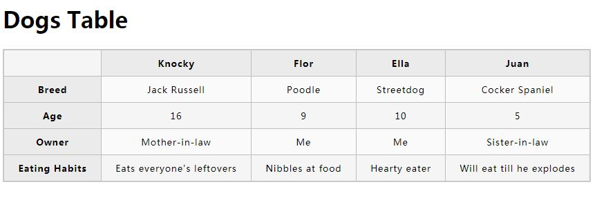
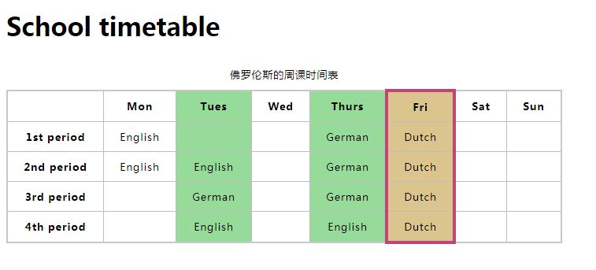
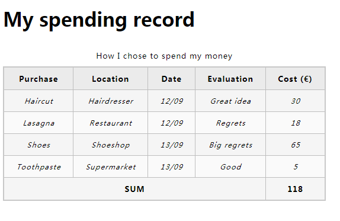
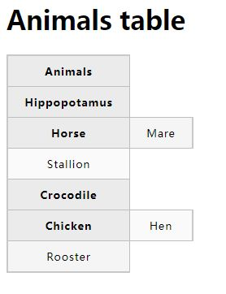

7-HTML 表格入门
任务目标：
- 了解熟悉HTML表格基本知识。
表格是由行和列组成的结构化数据集(表格数据)，可以找出不同类型数据的关系。
以前CSS浏览器兼容性差，常用表格布局。
现在不要用表格布局，因为：
- 表格布局减少了视觉受损的用户的可访问性：屏幕阅读器的用户会感到困惑。
- 表格会产生很多标签
- 表格不能自动响应：布局容器（<header><article><div>）的默认宽度是父元素的 100%,而表格的的默认大小是根据其内容而定的
td（表示table data）单元格
tr（表示table row）表格行
th（表示table header）表格标题
1.先写<tr></tr>占一行，再写<td></td>。
2.<th>表格标题 默认样式：加粗和居中。便于查找数据。

3.（竖行）rowspan 跨行高占单元格数 rowspan="2"一个单元格占两行单元格的高度
（横列）colspan 跨列宽占单元格数 colspan="2" 一个单元格占两列单元格的宽度
<table>
<tr>
<th colspan="2">Animals</th>
</tr>
<tr>
<th colspan="2">Hippopotamus</th>
</tr>
<tr>
<th rowspan="2">Horse</th>
<td>Mare</td>
</tr>
<tr>
<td>Stallion</td>
</tr>
<tr>
<th colspan="2">Crocodile</th>
</tr>
<tr>
<th rowspan="2">Chicken</th>
<td>Hen</td>
</tr>
<tr>
<td>Rooster</td>
</tr>
</table>
跨行高往下靠，往右靠，再跨列宽补充补充：
小结：跨行高——有人往下，就有人往右。跨列宽——有人往右，也有人往右。


4.为表格中的列提供共同的样式（或者不要样式）
<colgroup>
<col>
</colgroup>
<col>的属性
style="background-color:#97DB9A;" 设置样式
<table>
<colgroup>
<col>
<col style="background-color: yellow">
</colgroup>
<tr>
<th>Data 1</th>
<th>Data 2</th>
</tr>
<tr>
<td>Calcutta</td>
<td>Orange</td>
</tr>
<tr>
<td>Robots</td>
<td>Jazz</td>
</tr>
</table>
span="2" ：两列设置同样的样式或者不要样式
<colgroup>
<col style="background-color: yellow" span="2">
</colgroup>
<colgroup>
<col span="2"><!--第1、2列-->
<col style="background-color:#97DB9A;"><!--第3列-->
<col style="width: 42px;"><!--第4列-->
<col style="background-color: #97DB9A;"><!--第5列-->
<col style="background-color:#DCC48E; border:4px solid #C1437A;"><!--第6列-->
<col style="width: 42px;" span="2"><!--第7、8列-->
</colgroup>

8-HTML表格高级特性和可访问性
任务目标：
- 学习 HTML 表格进一步的功能，以及表格的无障碍访问性。
1.<caption> 说明标题 放在 <table> 标签下面。
2.<thead>, <tfoot>, 和 <tbody> 结构放在<tr>前面：表头、页脚、正文。 将表行分为三部分来设置样式。在下面的例子中加了 <tfoot> 元素后，"SUM" 这行跑到了表格的底部。
<tbody> 总是包含在每个表中，如果你没有在代码中指定它，那就是隐式的。
<style>
tbody {
font-size: 90%;
font-style: italic;
}
tfoot {
font-weight: bold;
}
</style>
<thead>
<tr>
<th>Purchase</th>
<th>Location</th>
<th>Date</th>
<th>Evaluation</th>
<th>Cost (€)</th>
</tr>
</thead>
<tfoot>
<tr>
<td colspan="4">SUM</td>
<td>118</td>
</tr>
</tfoot>
<tbody>
<tr>
<td>Haircut</td>
<td>Hairdresser</td>
<td>12/09</td>
<td>Great idea</td>
<td>30</td>
</tr>
<tr>
<td>Lasagna</td>
<td>Restaurant</td>
<td>12/09</td>
<td>Regrets</td>
<td>18</td>
</tr>
<tr>
<td>Shoes</td>
<td>Shoeshop</td>
<td>13/09</td>
<td>Big regrets</td>
<td>65</td>
</tr>
<tr>
<td>Toothpaste</td>
<td>Supermarket</td>
<td>13/09</td>
<td>Good</td>
<td>5</td>
</tr>
</tbody>

<th>的scope 属性：scope（适用范围）帮助屏幕阅读设备识别标题单元格是行标题还是列标题
列标题：
<thead>
<tr>
<th scope="col">Purchase</th>
<th scope="col">Location</th>
<th scope="col">Date</th>
<th scope="col">Evaluation</th>
<th scope="col">Cost (€)</th>
</tr>
</thead>
行标题：
<tr>
<th scope="row">Haircut</th>
<td>Hairdresser</td>
<td>12/09</td>
<td>Great idea</td>
<td>30</td>
</tr>
scope另外两个可选的值：colgroup 和 rowgroup表示多个列或行的顶部的标题（父标题）。
"Clothes"有一个 scope="colgroup"属性，另外三个子标题"Trousers", "Skirts", 和 "Dresses"用 scope="col"属性。

id 和标题属性
可替代scope属性（但是太麻烦）
每个<th> 元素添加一个 id
每个 <td> 元素添加一个 headers 属性，headers 属性包含 th 元素的 id，多个 th 元素用空格分隔这些 id（表示所在列行或者所在行列）。
<thead>
<tr>
<th id="purchase">Purchase</th>
<th id="location">Location</th>
<th id="date">Date</th>
<th id="evaluation">Evaluation</th>
<th id="cost">Cost (€)</th>
</tr></thead><tbody><tr>
<th id="haircut">Haircut</th>
<td headers="location haircut">Hairdresser</td>
<td headers="date haircut">12/09</td>
<td headers="evaluation haircut">Great idea</td>
<td headers="cost haircut">30</td></tr>
...
</tbody>

这个方法需要用大量的标记，容错率比较低。使用 scope 对于大多数表格来说够用。
小结：
- <td><tr><th>标签。
- <th>标签的三个属性：rowspan和colspan：跨行高与跨列宽，scpoe="rowgroup"、"colgroup"、"row"、"col"：顶部标题（父标题）和子标题，行标题与列标题。
- <thead><tbody><tfoot>三部分结构设置样式：<style></style>。
- <colgroup><col></col></colgroup>设置列样式：col 的两个属性——style和span。